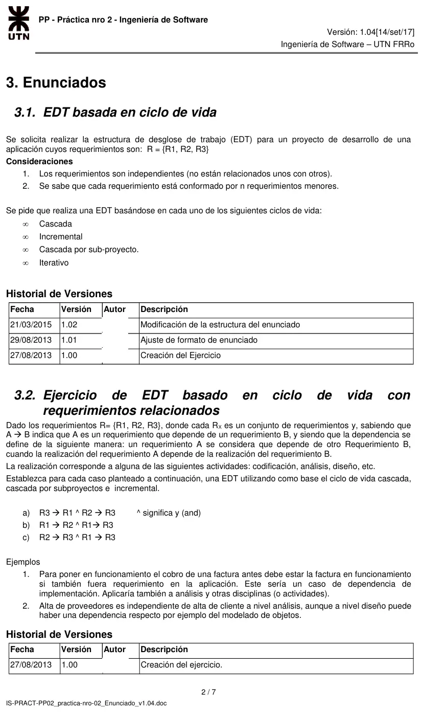
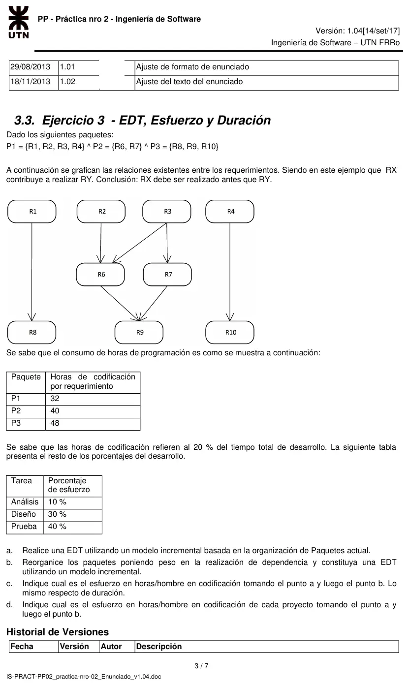
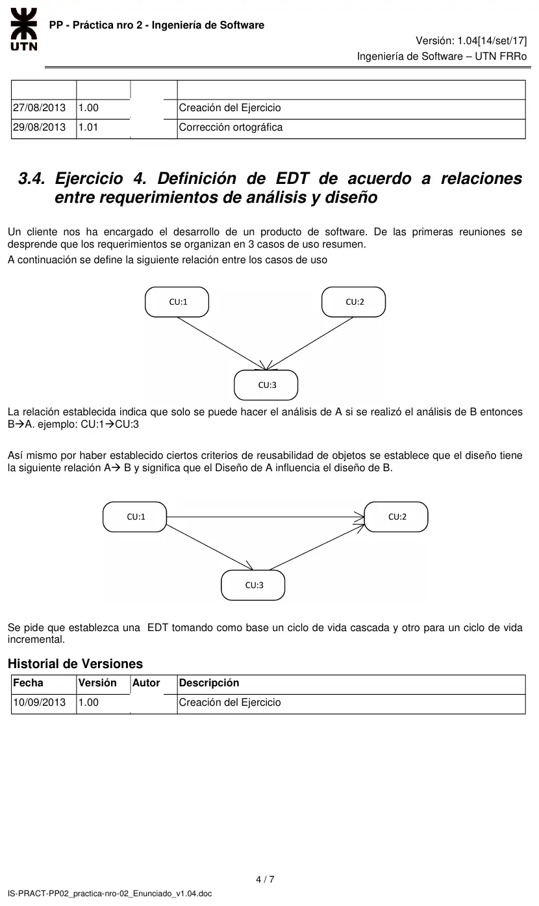

Práctica de la cátedra: EDT, esfuerzo y duración
Parcial de regularización, 2017
Enunciado






Propuesta de respuesta
Respuesta no verificada. La propuso Luta Studios con inteligencia artificial y ningún docente la revisó. Puede tener errores.
3.1 EDT basada en ciclo de vida
Los tres requerimientos son independientes. Debajo de cada R van sus n requerimientos menores, que acá no se repiten.
Cascada. El primer nivel son las fases, y cada fase espera a que termine la anterior.
1 Proyecto
1.1 Análisis
1.1.1 Análisis R1
1.1.2 Análisis R2
1.1.3 Análisis R3
1.2 Diseño
1.2.1 a 1.2.3 Diseño R1, R2 y R3
1.3 Codificación
1.3.1 a 1.3.3 Codificación R1, R2 y R3
1.4 Prueba
1.4.1 a 1.4.3 Prueba R1, R2 y R3Incremental. El primer nivel son los incrementos. Cada uno entrega un producto operativo y se integra con lo ya entregado.
1 Proyecto
1.1 Incremento 1, R1
1.1.1 Análisis R1
1.1.2 Diseño R1
1.1.3 Codificación R1
1.1.4 Prueba R1
1.1.5 Entrega del incremento 1
1.2 Incremento 2, R2
1.2.1 a 1.2.4 Análisis, diseño, codificación y prueba de R2
1.2.5 Integración con el incremento 1 y entrega
1.3 Incremento 3, R3
1.3.1 a 1.3.4 Análisis, diseño, codificación y prueba de R3
1.3.5 Integración con los incrementos anteriores y entregaCascada por subproyecto. El primer nivel son los subproyectos, uno por requerimiento, cada uno con su cascada. Como los requerimientos son independientes, pueden ir en paralelo. Hay una sola entrega, después de integrar.
1 Proyecto
1.1 Subproyecto R1
1.1.1 a 1.1.4 Análisis, diseño, codificación y prueba de R1
1.2 Subproyecto R2
1.2.1 a 1.2.4 Análisis, diseño, codificación y prueba de R2
1.3 Subproyecto R3
1.3.1 a 1.3.4 Análisis, diseño, codificación y prueba de R3
1.4 Integración, prueba del sistema y entregaIterativo. Son varios ciclos en cascada, cada uno sobre los tres requerimientos, y el cliente evalúa cada versión.
1 Proyecto
1.1 Iteración 1
1.1.1 Análisis R1, R2 y R3
1.1.2 Diseño R1, R2 y R3
1.1.3 Codificación R1, R2 y R3
1.1.4 Prueba
1.1.5 Evaluación del cliente
1.2 Iteración 2, con lo que evaluó el cliente
1.2.1 a 1.2.5 Las mismas tareas, refinadas
1.n Iteración n, hasta que el cliente acepta la versión3.2 EDT con requerimientos relacionados
significa que A depende de B, así que B se realiza antes. La dependencia vale para cada actividad, análisis, diseño o codificación.
| Caso | Orden | Cascada, dentro de cada fase | Cascada por subproyectos | Incremental |
|---|---|---|---|---|
| a) | R1, después R3, después R2 | R1, R3, R2 | SR1, SR3 y SR2. Cada actividad de SR3 arranca después de la misma de SR1, y cada una de SR2 después de la de SR3 | Incremento 1 R1, incremento 2 R3, incremento 3 R2 |
| b) | R2 y R3, después R1 | R2, R3, R1 | SR2 y SR3 en paralelo, SR1 después | Incremento 1 R2 y R3, incremento 2 R1 |
| c) | R3, después R1 y R2 | R3, R1, R2 | SR3, después SR1 y SR2 en paralelo | Incremento 1 R3, incremento 2 R1 y R2 |
Por ejemplo, la EDT del caso a) en cascada queda así.
1 Proyecto
1.1 Análisis
1.1.1 Análisis R1
1.1.2 Análisis R3
1.1.3 Análisis R2
1.2 Diseño
1.2.1 Diseño R1
1.2.2 Diseño R3
1.2.3 Diseño R2
1.3 Codificación, en el mismo orden
1.4 Prueba, en el mismo orden3.3 EDT, esfuerzo y duración
Las flechas del gráfico dicen qué se hace antes.
R1 -> R8
R2 -> R6
R3 -> R6, R7
R6 -> R9
R7 -> R9
R4 -> R10a. EDT incremental con los paquetes actuales.
1 Proyecto
1.1 Incremento P1, R1 R2 R3 R4
1.1.1 Análisis 1.1.2 Diseño 1.1.3 Codificación 1.1.4 Prueba
1.2 Incremento P2, R6 R7
1.2.1 Análisis 1.2.2 Diseño 1.2.3 Codificación 1.2.4 Prueba
1.3 Incremento P3, R8 R9 R10
1.3.1 Análisis 1.3.2 Diseño 1.3.3 Codificación 1.3.4 PruebaP2 depende de P1 (R6 y R7 necesitan R2 y R3), y P3 depende de P1 y de P2 (R8 necesita R1, R10 necesita R4 y R9 necesita R6 y R7). Los incrementos quedan en cadena.
b. Paquetes reorganizados por dependencia. Se juntan en un paquete los requerimientos que están unidos por alguna flecha.
1 Proyecto
1.1 Incremento P1', R1 R8
1.1.1 Análisis 1.1.2 Diseño 1.1.3 Codificación 1.1.4 Prueba
1.2 Incremento P2', R4 R10
1.2.1 Análisis 1.2.2 Diseño 1.2.3 Codificación 1.2.4 Prueba
1.3 Incremento P3', R2 R3 R6 R7 R9, en ese orden
1.3.1 Análisis 1.3.2 Diseño 1.3.3 Codificación 1.3.4 PruebaNingún paquete depende de otro.
c. Esfuerzo y duración en codificación. Cada requerimiento conserva las horas de codificación de su paquete original.
| Organización | Paquete | Cuenta | Horas |
|---|---|---|---|
| a | P1 | 128 | |
| a | P2 | 80 | |
| a | P3 | 144 | |
| a | Total | 352 | |
| b | P1', R1 y R8 | 80 | |
| b | P2', R4 y R10 | 80 | |
| b | P3', R2 R3 R6 R7 R9 | 192 | |
| b | Total | 352 |
El esfuerzo total de codificación es el mismo, 352 horas, porque se codifican los mismos requerimientos. Lo que cambia es la duración. Con un programador por paquete y jornadas de 8 horas:
- En a, los paquetes van en cadena, así que la codificación dura horas, 44 jornadas.
- En b, los tres paquetes son independientes y pueden ir en paralelo. Dura lo que el más largo, 192 horas, 24 jornadas.
d. Esfuerzo de cada proyecto. La codificación es el 20% del total, así que el total de cada paquete es su codificación dividida por 0,2. El resto sale de los porcentajes de la tabla.
| Organización | Paquete | Análisis 10% | Diseño 30% | Codificación 20% | Prueba 40% | Total |
|---|---|---|---|---|---|---|
| a | P1 | 64 | 192 | 128 | 256 | 640 |
| a | P2 | 40 | 120 | 80 | 160 | 400 |
| a | P3 | 72 | 216 | 144 | 288 | 720 |
| b | P1' | 40 | 120 | 80 | 160 | 400 |
| b | P2' | 40 | 120 | 80 | 160 | 400 |
| b | P3' | 96 | 288 | 192 | 384 | 960 |
| Las dos | Total | 176 | 528 | 352 | 704 | 1760 |
3.4 EDT según relaciones de análisis y diseño
En análisis, CU1 y CU2 van antes que CU3. En diseño, CU1 va antes que CU3, y CU3 antes que CU2.
Cascada.
1 Proyecto
1.1 Análisis
1.1.1 Análisis CU1
1.1.2 Análisis CU2
1.1.3 Análisis CU3, después de CU1 y CU2
1.2 Diseño
1.2.1 Diseño CU1
1.2.2 Diseño CU3, después de CU1
1.2.3 Diseño CU2, después de CU1 y CU3
1.3 Codificación CU1, CU2 y CU3
1.4 Prueba CU1, CU2 y CU3Incremental. CU1 puede ir solo en el primer incremento, porque no depende de nadie. CU2 y CU3 no pueden separarse. CU3 no puede ir primero, porque su análisis necesita el de CU2, y CU2 tampoco, porque su diseño necesita el de CU3. Van juntos en el segundo incremento.
1 Proyecto
1.1 Incremento 1, CU1
1.1.1 Análisis CU1
1.1.2 Diseño CU1
1.1.3 Codificación CU1
1.1.4 Prueba CU1
1.2 Incremento 2, CU2 y CU3
1.2.1 Análisis CU2
1.2.2 Análisis CU3
1.2.3 Diseño CU3
1.2.4 Diseño CU2
1.2.5 Codificación CU2 y CU3
1.2.6 Prueba e integración con el incremento 1Respuesta no verificada. Puede tener errores.
Se armó con la página Regularización, secciones Ciclos de vida, Del alcance al cronograma, Esfuerzo y duración y Predecesoras.
Quedó en duda: Cada requerimiento conserva las horas de codificación de su paquete original, y hay un programador por paquete. No queda claro qué distingue el punto c del d.
¿Cómo te fue?
Marcá cada tema del examen.
- EDTCómo viene el examen, en Regularización
- EsfuerzoEsfuerzo y duración, en Regularización
- DuraciónEsfuerzo y duración, en Regularización